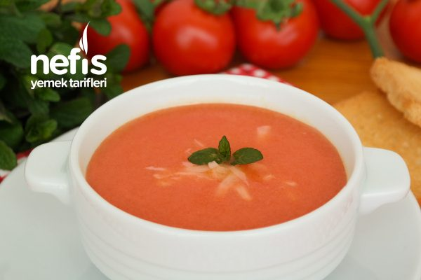

Domates Çorbası Tarifi

Salçalı Domates Çorbası
Domates olmadan da yapabileceğiniz bu tarifi
yaz kış farketmeksizin domates salçası ile hazırlayabilirsiniz.
Su yerine tavuk suyu, kemik suyu veya et suyu kullanılabilir.
İçindekiler
- 1 Yemek Kaşığı Domates Salçası
- 1 Yemek Kaşığı Un
- 1 Yemek Kaşığı Zeytinyağ
- 2 Çay Kaşığı Karabiber, Pulbiber, Nane
- 1 Tatlı Kaşığı Tuz
- Kıvamına göre sıcak su
Hazırlanışı
- Yağ ve salçayı tencerede orta ateşte karşıtır
- Unu ekle ve karıştır
- Yavaşça istediğiniz kıvama göre su ekle
- Un tamamen karışıncaya kadar karıştır
- Tuz ve baharatları koy ve karıştır
- Servise hazır